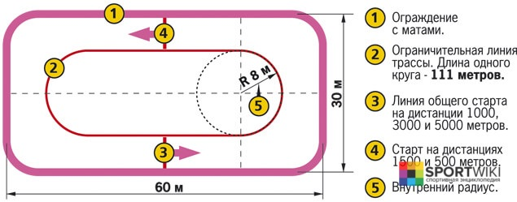

Шорт-трек
Шорт-трек (англ. short track) – это олимпийский вид конькобежного спорта, суть которого заключается в максимально быстром прохождении трассы. Он назван так из-за длины трассы, которую необходимо пробежать спортсмену, всего 111,12 метров.
История возникновения и развития шорт-трека
До сих пор не ясно кто изобрел шорт-трек. За право называться основателем данного вида спорта борются канадцы и англичане.
Точно известно, что первые соревнования прошли в Канаде в 1905 году, а в Англии только в 1914 году.
В 1915 году состоялся первый международный турнир с участием, в котором приняли участие спортсмены из США и Канады.
В 1967 году шорт-трек приняли в состав Международного союза конькобежцев (ISU). В этом же году в США состоялся первый Чемпионат мира по шорт-треку.
В 1975 году ИСУ принял решение о создании Технического Комитета по шорт-треку. Первый чемпионат Европы прошёл в 1997 году в Мальме (Швеция).
В 1992 году шорт-трек был включен в программу Олимпийских игр в Альбервилле (Франция).
Правила шорт-трека
Трасса для шорт-трека располагается на обычном хоккейном поле. Дорожка имеет длину 111,12 метров, радиус поворотов равен 8 метрам, а расстояние между закруглениями 28,85 метров.
Движение спортсменов происходит против часовой стрелки (внутренняя граница дорожки находится с левой стороны).
Количество спортсменов на старте от 4-х до 8-ми, это зависит от дистанции (от 400 до 5000 м) – чем она короче, тем меньше конькобежцев.
Стартовая и финишная линии располагаются под прямым углом к прямой части дорожки.
Для регистрации результатов финиша на крупных чемпионатах и первенствах используют электронное оборудование, в остальных случаях допускается ручное хронометрирование.

Правилами запрещается:
- мешать другим спортсменам;
- срезать дистанцию;
- пересекать траекторию более быстрого спортсмена;
- выбрасывать вперёд ногу с отрывом ото льда перед финишной чертой;
- подталкивать товарищей по команде (кроме как во время передачи эстафеты);
- двум и более спортсменам действовать по сговору.
За нарушение правил – дисквалификация, как и за повторный фальстарт.
В шорт-треке существуют как индивидуальные забеги, так и командные эстафеты.
Судейство
Судейская коллегия состоит из главного судьи, заместителей главного судьи (2-4), главного секретаря, заместителя главного секретаря, стартера и помощника стартера,
старшего судьи на финише, судей на финише (4-6),судьи фотофиниша (1-2), старшего хронометриста, хронометристов (4-б), судьи — счетчика кругов (1-4),
секретарей (3-4), судьи-информатора (1-2), судьи при участниках, судьи в хитбоксе, судьи, записывающего время кругов, врача соревнований, коменданта.
В состав главной судейской коллегии входят: главный судья, заместители главного судьи, главный секретарь, стартер, старший судья на финише, старший хронометрист.
В состав главной судейской коллегии на правах заместителя входит врач соревнований.
Соревнования по шорт-треку
Олимпийские игры – самые престижные соревнования по шорт-треку, проводятся раз в четыре года.
Чемпионат мира по шорт-треку — ежегодное соревнование по конькобежному спорту, которое проводится Международным союзом конькобежцев.